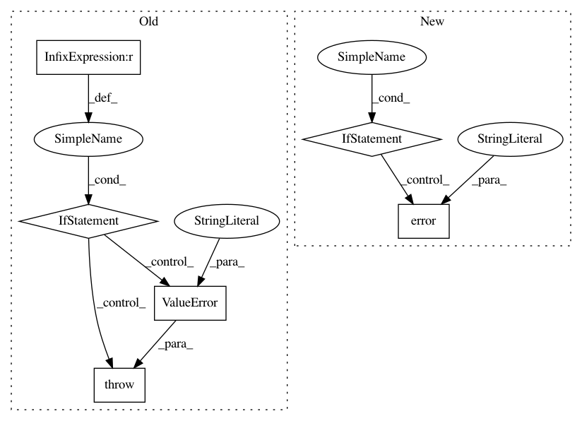

b01ea16c4fadeb271c2bde653947d92048f367c8,kur/backend/keras_backend.py,KerasBackend,_restore_keras,#KerasBackend#Any#Any#,386
Before Change
// Get the symbolic weights.
symbolic_weights = layer.weights
if len(weights) != len(symbolic_weights):
raise ValueError("Layer "%s" expected %d weights, but we "
"found %d on disk.", layer_name, len(symbolic_weights),
len(weights))
// Get the associated names (so we know what order to assign the
// weights in.
weight_names, _ = \
self._get_weight_names_and_values_from_symbolic(
symbolic_weights
)
After Change
available = set(weights.keys())
needed = set(name.replace("/", "_") for name in weight_names)
if available ^ needed:
logger.error("Weight discrepancy in the weights we are "
"supposed to load.")
logger.error("These weights are on-disk, but not "
"requested: %s", ", ".join(available - needed))
logger.error("These weights were requested, but not "
"available: %s", ", ".join(needed - available))
raise ValueError("Layer "{}" expected {} weights, but we "
"found {} on disk.".format(layer_name,
len(needed), len(available)))
for i, name in enumerate(weight_names):
name = name.replace("/", "_")
weight_value_tuples.append((symbolic_weights[i], weights[name]))
In pattern: SUPERPATTERN
Frequency: 3
Non-data size: 6
Instances
Project Name: deepgram/kur
Commit Name: b01ea16c4fadeb271c2bde653947d92048f367c8
Time: 2017-03-21
Author: ajsyp@syptech.net
File Name: kur/backend/keras_backend.py
Class Name: KerasBackend
Method Name: _restore_keras
Project Name: EducationalTestingService/skll
Commit Name: e8db6660b202733a5764e9e9add869dbde8dbc32
Time: 2014-11-06
Author: nmadnani@ets.org
File Name: skll/utilities/join_features.py
Class Name:
Method Name: main
Project Name: beancount/smart_importer
Commit Name: 2935cdd098302ff379dd40c23acf088b62934aad
Time: 2018-09-15
Author: mail@jakobschnitzer.de
File Name: smart_importer/predictor.py
Class Name: SmartImporterDecorator
Method Name: train_pipeline